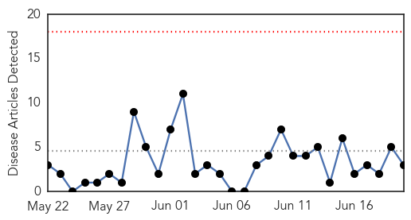

Influenza
30-Day Web Trend
0 alerts, 0 warnings

30-Day Twitter Trend
1 alerts, 0 warnings

Article Locations

Article Confidences
Top Articles:
- 0.999
- Sri Lanka on ‘Red Alert’ for MERS virus -Health Ministry
- 0.981
- Chinese Patient in Surabaya Tests Negative for MERS Infection
- 0.920
- Times Of Oman :: Oman Air urges Thailand-bound passengers to get tested after MERS threat
- 0.824
- No additional canine flu cases at St. Paul animal shelter
- 0.808
- No new contract for Alberta’s top doc, Dr. James Talbot to step down
- 0.751
- June 19, 2015 Archives
- 0.751
- June 19, 2015 Archives
- 0.751
- June 19, 2015 Archives
- 0.751
- June 19, 2015 Archives
- 0.515
- Colds and flu hit blood stocks
Top Tweets:
- 0.670
- Complete Genome Sequence of a Highly Pathogenic Avian Influenza Virus (H5N2) Associated with an Outbreak in http://t.co/FaIgrdfvhM
Meningitis
30-Day Web Trend
0 alerts, 0 warnings

30-Day Twitter Trend
0 alerts, 0 warnings

Article Locations
Article Confidences

Top Articles:
Top Tweets:
-
No tweets found for Jun 20, 2015